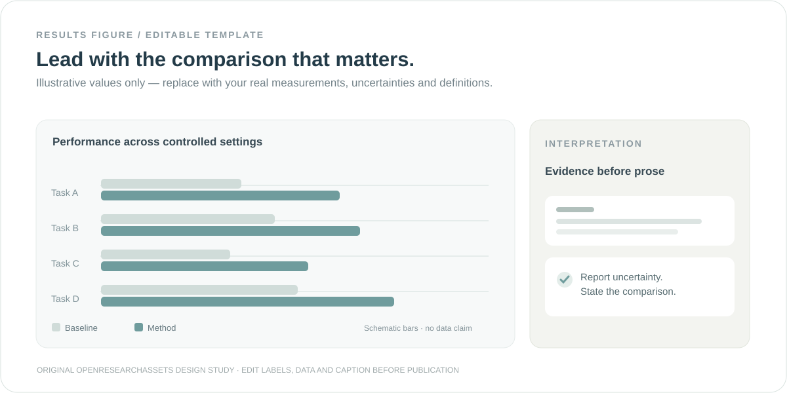
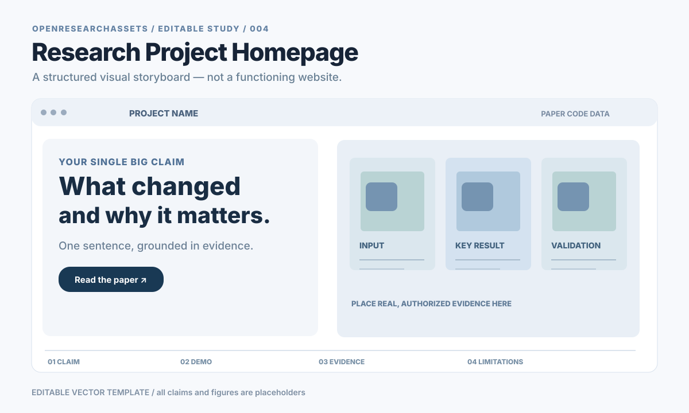
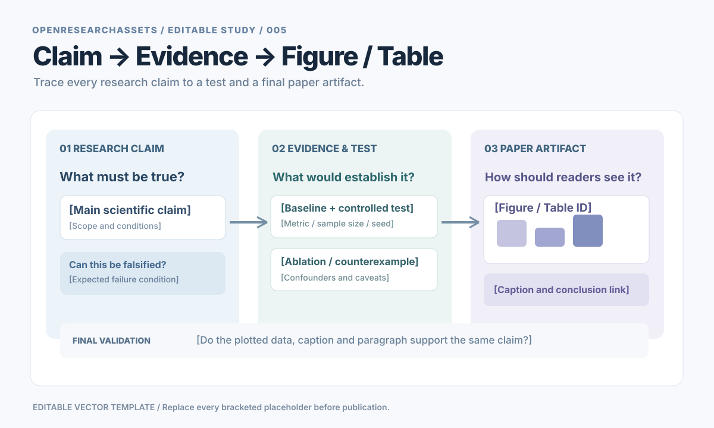

让科研设计更加出色 / 开放研究资源
收藏真正出色的图，
沉淀真正有用的技能。
从文献调研、方法设计到实验、写作与成果展示，发现经过整理的科研经验、设计参考、可编辑资源和实用工作流。
01 — 科研资产检索
找到好经验，
真正用起来。
不只是漂亮论文图：根据当前任务，找到研究案例、可编辑素材、工具、流程与经验。每项资产都有来源、用途与使用边界。
PROJECT SITES / ORIGINAL WEBSITES
交互科研主页 · 直接进入原站
点图或标题，直接打开原作者网页；交互行为请在原站体验。缩略图为原站演示素材，不是整页截图。
正在加载原作者主页…
发现更好的科研作品？欢迎参与精选。我要投稿 ↗
正在读取科研资产目录…
第三方作品版权归原权利人。本站用于科研参考、来源导航与具体评述，非原作者官方发布；署名与免费展示不代表获得授权。如您是权利人且对收录或展示有异议，请联系申请撤除或更正，我们会核实并及时处理。
申请撤除或更正 ↗
原创概念模板 · 示例内容仅用于展示设计方法，不代表真实实验结果。
01B — 可编辑素材
不仅能看，
还应能编辑。
五份 SVG 原创概念模板均保留可编辑的形状和文字；使用前请替换示例内容。







以上均为概念布局。正式发表前必须替换占位内容，并核对科学事实。 许可与来源 ↗
02 — SKILLS / WORKFLOWS
不是收集越多越好，
而是有依据地精选。
两条严格分开的收录路线：社区高热度的外部项目，以及有公开产物的项目实践。Star 反映关注，不代表我们亲测有效。
01 / COMMUNITY POPULARITY
高热度开源精选
显示 GitHub 仓库 Star：可访问时更新实时数字，否则使用注明日期的快照。入选不等于我们已经安装或验证。
加载高热度资源…
02 / FIELD NOTES
有真实使用记录的工作流
只收录能指向公开成果与来源记录的工作流；曾经实际使用不等于经过独立效益评测。
加载实践积累…